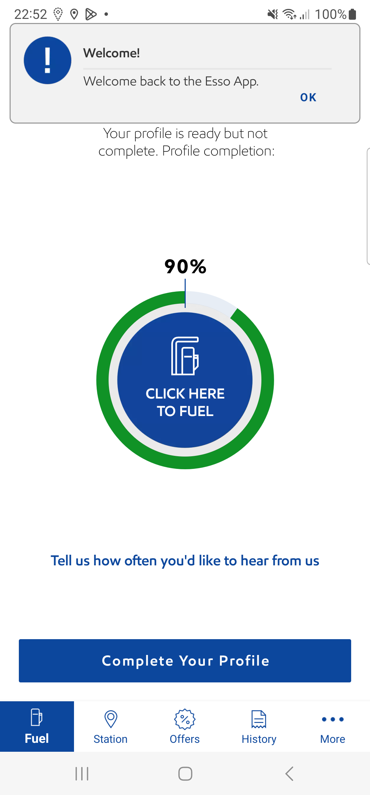

-
COFChallengeFlow
10:50:50 pm / 00:01:27:903 Fail
COFChallengeFlow
05.17.2024 10:50:50 pm 05.17.2024 10:52:18 pm 00:01:27:903 · #test-id=1FailVerify that System should display 100£ as the default MFA ruler unit and do not display the previous set MFA when User log out and log in to the same device after saving the MFA value for next time.Given user is on NLID screenWhen user taps on start button in LIDAnd user selects pump number "1" to start fuellingAnd user selects the pump from 'Select your Pump' page and taps on continue buttonThen the user is navigated to Confirm payment screenWhen user kill and relaunch the appGiven user log out from the app if logged instepDefinitions.Hook.afterEachStep(io.cucumber.java.Scenario)df1b3c46-73c5-45f6-a0d3-fff73ee636c2When user clicks on Login IconStep skippedAnd I enter "FrictEssoPsword" in login detailsStep skippedAnd user taps login button in login screenStep skippedGiven user is on NLID screenStep skippedWhen user taps on start button in LIDStep skippedAnd user selects pump number "1" to start fuellingStep skippedAnd user selects the pump from 'Select your Pump' page and taps on continue buttonStep skippedThen user verify the MFA screenStep skipped
-
java.lang.AssertionError
1 tests
java.lang.AssertionError
1 failedStatus Timestamp TestName Fail 22:52:11 pm Given user log out from the app if logged in COFChallengeFlow.Verify that System should display 100£ as the default MFA ruler unit and do not display the previous set MFA when User log out and log in to the same device after saving the MFA value for next time..Given user log out from the app if logged in
-
@COFChallengeFlow
1 tests
@COFChallengeFlow
1 failedStatus Timestamp TestName Fail 22:50:50 pm Verify that System should display 100£ as the default MFA ruler unit and do not display the previous set MFA when User log out and log in to the same device after saving the MFA value for next time. COFChallengeFlow.Verify that System should display 100£ as the default MFA ruler unit and do not display the previous set MFA when User log out and log in to the same device after saving the MFA value for next time. -
@AndroidRegression
1 tests
@AndroidRegression
1 failedStatus Timestamp TestName Fail 22:50:50 pm Verify that System should display 100£ as the default MFA ruler unit and do not display the previous set MFA when User log out and log in to the same device after saving the MFA value for next time. COFChallengeFlow.Verify that System should display 100£ as the default MFA ruler unit and do not display the previous set MFA when User log out and log in to the same device after saving the MFA value for next time. -
@Sprint2319_20
1 tests
@Sprint2319_20
1 failedStatus Timestamp TestName Fail 22:50:50 pm Verify that System should display 100£ as the default MFA ruler unit and do not display the previous set MFA when User log out and log in to the same device after saving the MFA value for next time. COFChallengeFlow.Verify that System should display 100£ as the default MFA ruler unit and do not display the previous set MFA when User log out and log in to the same device after saving the MFA value for next time. -
@AndroidRegressionSet1
1 tests
@AndroidRegressionSet1
1 failedStatus Timestamp TestName Fail 22:50:50 pm Verify that System should display 100£ as the default MFA ruler unit and do not display the previous set MFA when User log out and log in to the same device after saving the MFA value for next time. COFChallengeFlow.Verify that System should display 100£ as the default MFA ruler unit and do not display the previous set MFA when User log out and log in to the same device after saving the MFA value for next time. -
@P11270-23973
1 tests
@P11270-23973
1 failedStatus Timestamp TestName Fail 22:50:50 pm Verify that System should display 100£ as the default MFA ruler unit and do not display the previous set MFA when User log out and log in to the same device after saving the MFA value for next time. COFChallengeFlow.Verify that System should display 100£ as the default MFA ruler unit and do not display the previous set MFA when User log out and log in to the same device after saving the MFA value for next time. -
@SprintiOS2320
1 tests
@SprintiOS2320
1 failedStatus Timestamp TestName Fail 22:50:50 pm Verify that System should display 100£ as the default MFA ruler unit and do not display the previous set MFA when User log out and log in to the same device after saving the MFA value for next time. COFChallengeFlow.Verify that System should display 100£ as the default MFA ruler unit and do not display the previous set MFA when User log out and log in to the same device after saving the MFA value for next time. -
@iOSRegression
1 tests
@iOSRegression
1 failedStatus Timestamp TestName Fail 22:50:50 pm Verify that System should display 100£ as the default MFA ruler unit and do not display the previous set MFA when User log out and log in to the same device after saving the MFA value for next time. COFChallengeFlow.Verify that System should display 100£ as the default MFA ruler unit and do not display the previous set MFA when User log out and log in to the same device after saving the MFA value for next time. -
@iOSRegressionSet1
1 tests
@iOSRegressionSet1
1 failedStatus Timestamp TestName Fail 22:50:50 pm Verify that System should display 100£ as the default MFA ruler unit and do not display the previous set MFA when User log out and log in to the same device after saving the MFA value for next time. COFChallengeFlow.Verify that System should display 100£ as the default MFA ruler unit and do not display the previous set MFA when User log out and log in to the same device after saving the MFA value for next time.
Started
May 17, 2024 10:50:49 pm
Ended
May 17, 2024 10:52:18 pm
Features Passed
0
Features Failed
1
Features
Scenarios
Steps
Timeline
Tags
| Name | Passed | Failed | Skipped | Others | Passed % |
|---|---|---|---|---|---|
| @COFChallengeFlow | 0 | 1 | 0 | 0 | 0% |
| @AndroidRegression | 0 | 1 | 0 | 0 | 0% |
| @Sprint2319_20 | 0 | 1 | 0 | 0 | 0% |
| @AndroidRegressionSet1 | 0 | 1 | 0 | 0 | 0% |
| @P11270-23973 | 0 | 1 | 0 | 0 | 0% |
| @SprintiOS2320 | 0 | 1 | 0 | 0 | 0% |
| @iOSRegression | 0 | 1 | 0 | 0 | 0% |
| @iOSRegressionSet1 | 0 | 1 | 0 | 0 | 0% |